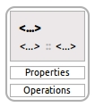
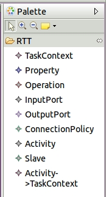
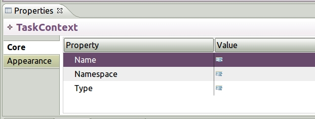

Adding a TaskContext
This is how a TaskContext looks like when it is first
created in the model diagram:

The easiest way to add a TaskContext or any other model
element is to select, drag and drop the element form the
Palette to the diagram.

- Select a TaskContext.
- Drag to the diagram.
- Drop the TaskContext on the diagram.
- Select the TaskContext in the diagram.
- Open the Properties View.

- Select the Value cell for
Name and type the component name (e.g. Distance
Sensor).
- Selcet the Value cell for Namespace and
type the C++ namespace of for the TaskContext (e.g. same as package
name).
- Selext the Value cell for Type and type
the C++ type name. (e.g. DistanceSensorImpl).
- Save your work.